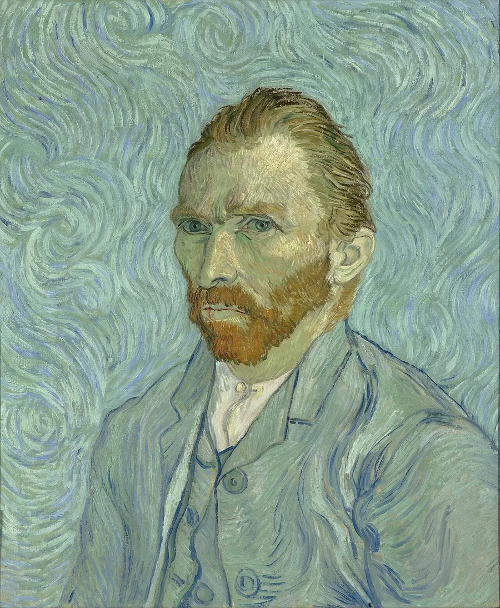
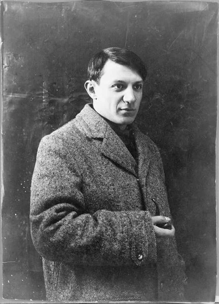
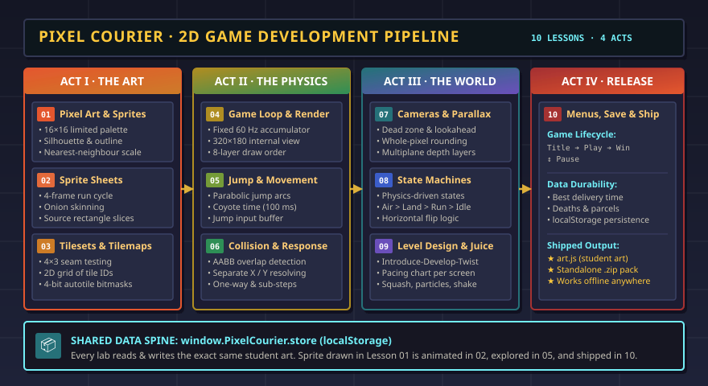

A making pathway for kindergarten through Grade 12 · sister to 3D Design
2D Design
Make a mark. Arrange it on a flat surface. Then make it move.
Everything here happens on a flat picture plane: a canvas, a print, a page, a frame of film, a game screen. Learn from the artists who mastered it, practise color and layout, animate a drawing, then build a world out of sprites and tiles.

Stage 1 · Pioneers
People who changed the flat picture
Each of these artists worked on a flat surface and found a new way to make it say more. Open a portrait to discuss it with the class, then open the lesson.




Discuss: Each artist had only a flat surface. What did each one do to show something a flat surface can't hold on its own: brightness, several sides at once, depth, or movement?
Stage 2 · Color, line & layout
Control what the eye sees first
These studios live in the Visual Art & Design module and are the working tools of every 2D designer. Try one, then use what you learned on your own picture, poster or sprite.
- Color Theory Lab
Change hue, saturation and value; build the color harmonies Van Gogh used by instinct.
- Typography Hierarchy Studio
Use size, weight and spacing so a reader knows where to look first.
- Photo Editing Workshop
Stack layers, hide with masks instead of erasing, and mix with blend modes.
- Optical Illusions Lab
See how the brain fills in what a flat image leaves out.
Finish when: You can point to the first thing a viewer notices in your design and explain which choice of color, size or position put it there.
Stage 3 · 2D animation
Make it move
Animation is a stack of flat drawings shown fast enough that the eye blends them. Start with Disney's studio tricks, then animate a character of your own.
- Animation Lab
Change the frame rate of a bouncing ball, add squash and stretch, turn on onion skin, and slide the layers of a multiplane camera.
- Sprite Sheets & Animation
Draw idle, run and jump frames with onion skin, then export them as one sprite sheet.
- Animation State Machines
Let the character's movement choose which animation plays.
Finish when: Your animation loops without a jump and you can explain how many frames per second it uses and why.
Stage 4 · Make it play
Your drawings become a game
The 2D Game Developer Pathway is ten lessons that build one pixel-art platformer, Pixel Courier. The hero you draw in lesson 1 is the one you animate, move and ship in lesson 10.

- Make the art
Pixel art and sprites, sprite sheets, tilesets and tilemaps.
- Make it move
Game loop, movement and jump feel, collision.
- Make it a world
Cameras and parallax, animation states, level design and game feel.
- Ship it
Menus, saving, credits and a game someone else can play.
Finish when: A classmate can play your game from the title screen to the end without your help.
Sister module
Going 3D
Flat-picture skills carry straight into three dimensions: the views you draw become a CAD model, the colors become materials, and the walk cycle becomes a rigged character. Continue in 3D Design, or start with Blueprint Drafting, where a flat drawing is the plan for a solid object.